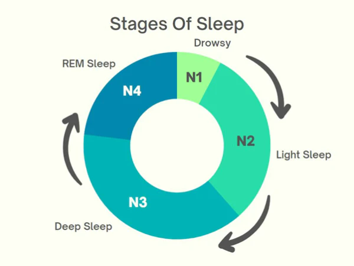

Sleep Stage Classification with XAI
Explainable AI for PPG-based four-stage sleep classification, with SHAP/LIME interpretability and ensemble methods. IEEE-published.

One sensor, four stages
Scroll to watch it unfold. Each beat is one documented step of the project.
- 01
PPG signal
A single photoplethysmography sensor, like the one in a fitness wearable.
- 02
Features
Signal features are extracted from each epoch.
- 03
Explainable model
Explainable AI shows which features matter.
- 04
Sleep stage
The epoch is classified as Wake, Light, Deep or REM.
- 05
Outcome
A low-cost PPG sensor separates Wake, Light, Deep and REM sleep, with reasons.
An illustration of how the system works, drawn from the write-up below. It is not recorded output.
Overview
Full sleep staging normally means an overnight polysomnography (PSG) test — EEG, EOG, EMG, heart rate and breathing all recorded in a lab, accurate but expensive, single-night-only, and impractical to repeat (roughly 93.6% of sleep centers had to shift to telemedicine during COVID). This IEEE ICEACE 2024 work — published as two papers, a baseline study and this explainable-AI follow-up — tests whether a single low-cost photoplethysmography (PPG) sensor, the kind already in a fitness wearable, can classify sleep into four stages (Wake, Light, Deep, REM) well enough to be a practical at-home alternative.
Approach
Using PPG and polysomnography recordings from 10 patients with sleep-disordered breathing (Charité Hospital, Berlin), the pipeline segments overnight signal into 9,428 thirty-second epochs, engineers 84 PPG-derived features and statistically prunes them to 72, then trains four classifiers — SVM, Random Forest, XGBoost and CatBoost. Explainable AI is applied not just for interpretability but as a feature-selection step: built-in feature importance for the tree ensembles and permutation importance for SVM rank every feature, and each model is retrained on only its own top-ranked subset.
Results
The XAI-pruned models beat their full-feature counterparts on every metric while using far fewer features: CatBoost reached 75.54% accuracy (F1 0.75, Cohen's κ 0.59) with only 42 of the original 72 features, and XGBoost reached the best overall accuracy at 75.93% with 56 features. Both beat the best prior single-sensor PPG baseline evaluated on the same 10-subject dataset (Motin et al., 2023, ~70–72%). The finding: cutting model complexity nearly in half didn't cost accuracy — it improved it, because the XAI-selected features were carrying the real signal.
Highlights
- IEEE Published
- Explainable AI
- Healthcare
Tech stack & key skills
Core tools, methods and skills demonstrated in this project: